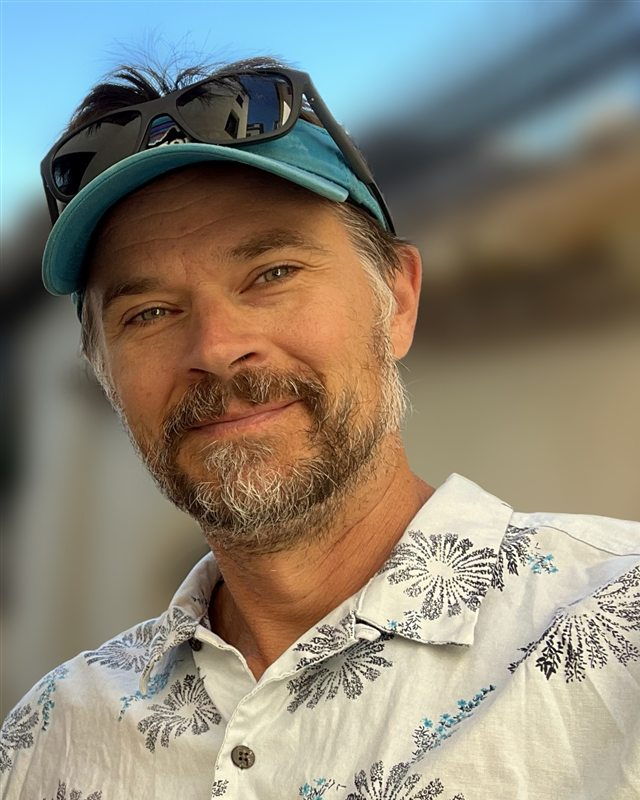

Tell us about the busy work. We'll find the one piece AI can take off your plate first, and talk it through on a free 30-minute call.
No pitch deck · No 50-page roadmap · One next step
Rather skip the questions? Book a call directly →
A short intake, typed or spoken. A few questions about the business, then follow-ups based on what you actually said.
Free. We come in having read your answers, so we skip the introductions and get straight to the bottleneck.
The single highest-leverage thing to automate first, and what it would take. If you want it built, we build it with you.
Owner-run businesses with a small team and too much to do. The industry matters less than the pattern: a small team spending real hours on repetitive work that a computer should be doing.
If someone on your team dreads a task because it's the same thing every week, that's usually where we start.
One of us has spent 25 years running businesses like yours. The other builds the automation. You talk to both of us, and nobody hands you off to a junior team.

Balin has over 25 years of experience in starting businesses with over ten startups and exits. He obtained a Bachelor of Science in geology in 1999 and started his professional career at an engineering firm in Seattle. He quickly moved into business management and leadership with starting companies in engineering, oil & gas, construction, rental properties, health services, executive coaching, and recently in technology with NextStepAI. His business experience is primarily with companies between $1M and $20M in annual revenue. Balin brings project management, business management, business development, and decades of practical business leadership experience of providing quality products and services to clients around North and South America. Happy husband to Judy for nearly thirty years and proud dad of two kids, he currently resides in the Pacific Northwest and enjoys trail jogs, mountain bike rides, good books by warm fires, dark beer, and anything steep that needs to be climbed.
Sam has spent the last two years deeply researching the AI space and putting it to work for businesses. He co-founded NextStepAI with his dad in January 2026 and has since built AI tools and automations for companies in healthcare, legal, finance, sales, and professional services. His projects range from payroll and invoicing automation to document drafting, financial forecasting, and scheduling. Sam brings hands-on AI development, process automation, and a practical eye for finding the work a team spends too much time on. He currently resides in the Pacific Northwest and enjoys skiing, surfing, and mountain biking.